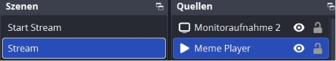
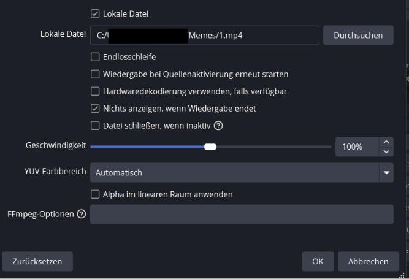
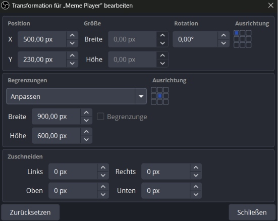
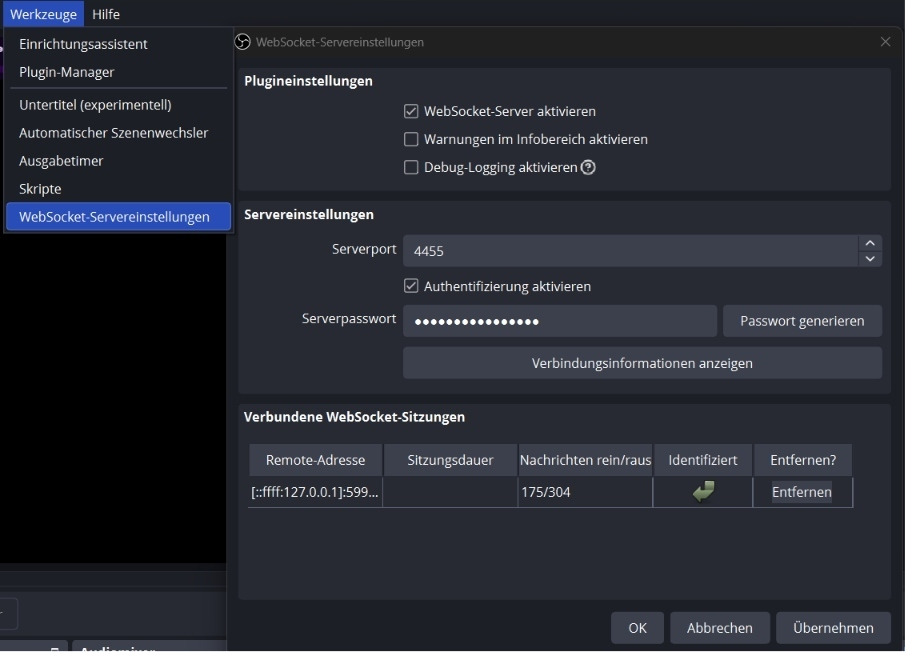
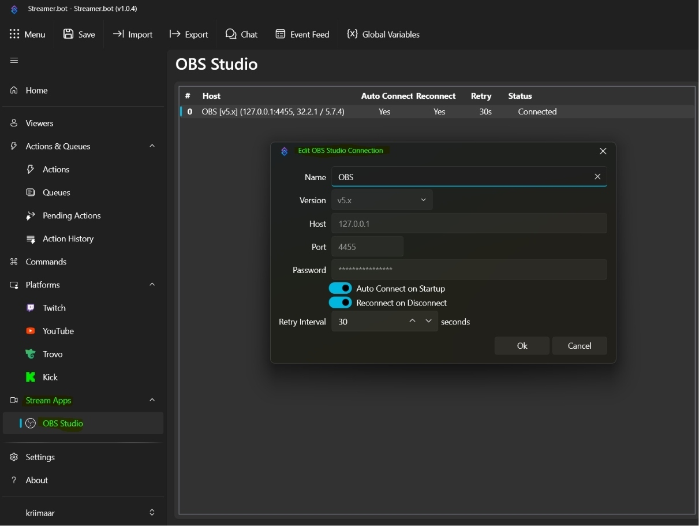
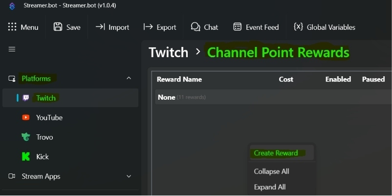
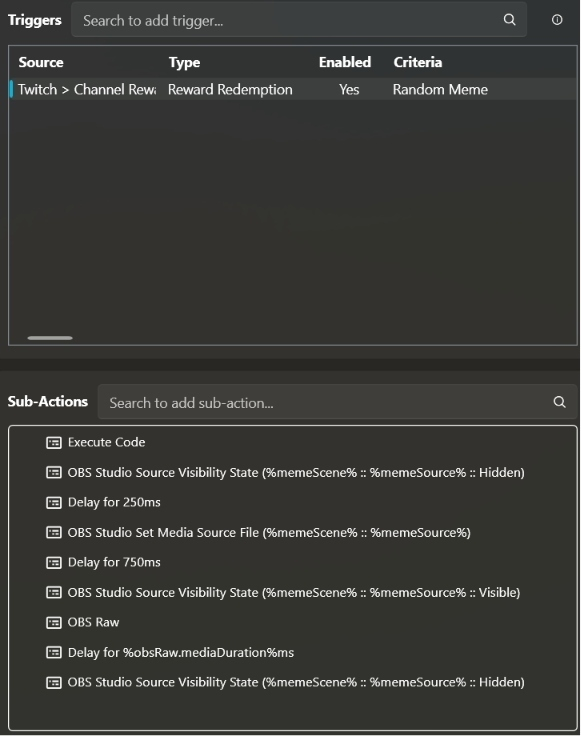

OBS · Streamer.bot · Twitch · Channel Points
Random
Meme.
Mit dieser Funktion lösen Zuschauer eine Kanalpunkte-Belohnung aus. Streamer.bot wählt zufällig einen Clip aus deinem Meme-Ordner und spielt ihn über OBS ab. Weitere Einlösungen landen in einer Warteschlange, jeder Clip wird nur einmal hintereinander abgespielt und seine Länge automatisch erkannt.
Video-Anleitung
Einrichtung im Video ansehen
Das Video zur Einrichtung folgt hier. Bis dahin führt dich die Anleitung in den Abschnitten darunter Schritt für Schritt durch die Einrichtung.
02 / Voraussetzungen
Was vorher vorhanden sein muss
- Eine vorhandene OBS-Szene plus eine Medienquelle, über die die Clips laufen.
- Streamer.bot übernimmt die Auswahl der Videos, steuert OBS und reagiert auf deine Twitch-Belohnung.
- Ein Ordner auf deinem PC mit MP4-, MOV-, MKV- oder WEBM-Dateien. MP4/H.264/AAC ist am unkompliziertesten.
- Der Import-Key weiter unten enthält die komplette Action inklusive Queue-Ablauf, Medienwechsel und dynamischer Clipdauer.
03 / OBS Medienquelle
Meme Player in OBS anlegen
Die Medienquelle kann direkt in einer vorhandenen Stream-Szene liegen. Soll der Clip in mehreren Szenen erscheinen, füge dieselbe Quelle in den gewünschten Szenen hinzu.
Quelle erstellen
- Öffne die Szene, in der der Clip erscheinen soll.
- Im Bereich Quellen auf + klicken und Medienquelle wählen.
- Die Quelle Meme Player nennen. Der Name muss später exakt im Code stehen.
- Als lokale Datei einen beliebigen Clip aus deinem Meme-Ordner auswählen. Streamer.bot ersetzt diese Datei später automatisch.
Einstellungen der Medienquelle
- Lokale Datei aktivieren und einen beliebigen Clip als Platzhalter auswählen.
- Endlosschleife deaktiviert lassen.
- Wiedergabe bei Quellenaktivierung erneut starten deaktivieren.
- Nichts anzeigen, wenn Wiedergabe endet aktivieren.



Merkliste
| Punkt | Bedeutung |
|---|---|
| In vorhandenen Szenen | Quelle in jeder gewünschten Szene platzieren. |
| Eigene Szene | Optional, wenn der Clip immer vollflächig oder als separates Layout erscheinen soll. |
| Wichtig für den Code | Der Quellenname wird später in das Feld „OBS-Medienquelle“ übernommen. |
04 / Verbindung
OBS mit Streamer.bot verbinden
Der WebSocket ist die lokale Schnittstelle zwischen OBS und Streamer.bot. Einmal eingerichtet, bleibt die Verbindung bestehen.
In OBS
- Öffne oben Werkzeuge.
- Wähle WebSocket-Servereinstellungen.
- Aktiviere WebSocket-Server aktivieren.
- Lass den Port auf 4455.
- Aktiviere die Authentifizierung, notiere das Passwort und klicke Übernehmen.

In Streamer.bot
- Öffne links Stream Apps → OBS Studio.
- Rechtsklick in die Liste → Add.
- Version: v5.x; Host: 127.0.0.1; Port: 4455.
- Trage das Passwort aus OBS ein.
- Auto Connect on Startup und Reconnect on Disconnect aktiv lassen; dann OK.

05 / Action importieren
Import-Key in Streamer.bot einfügen
Der Import enthält die komplette Action inklusive sicherer Reihenfolge und dynamischer Videolänge. Deine eigenen Namen und Pfade trägst du erst im nächsten Schritt ein.
Import
- Öffne Streamer.bot.
- Klicke oben auf Import.
- Wähle Import from Clipboard.
- Klicke hier auf Import-Key kopieren.
- Füge den Key in Streamer.bot ein und bestätige den Import.
- Prüfe unter Actions, ob die Action vorhanden ist.
06 / Action anpassen
Ordner, Szene und Quelle eintragen
Trage deine Werte in die Felder rechts ein. Der Code links aktualisiert sich sofort und enthält danach exakt deine Namen. Änderungen werden nur lokal in deinem Browser gespeichert.
So fügst du den Code ein
- Öffne die importierte Action in Streamer.bot.
- Doppelklicke die Sub-Action Execute Code.
- Ersetze den vorhandenen Inhalt komplett durch den generierten Code.
- Klicke unten links erst Find Refs, danach Compile. Erst wenn keine Fehler angezeigt werden: Save & Compile.
- Die Action setzt danach automatisch
%memeScene%,%memeSource%und%memeVideo%.
07 / Twitch Kanalpunkte
Kanalpunkte-Reward verknüpfen
Belohnung anlegen
- Öffne Platforms → Twitch → Channel Point Rewards.
- Rechtsklick in die Liste → Create Reward.
- Vergib einen Namen, zum Beispiel „Random Meme“, und wähle den Preis.
- Speichern und die Belohnung aktivieren.

Trigger verbinden
- Gehe zu Actions & Queues → Actions und öffne die importierte Action.
- Oben im Bereich Triggers den vorhandenen Trigger auswählen.
- Bei Criteria die eben erstellte Kanalpunkte-Belohnung auswählen.
- Speichern. Die restliche Action bleibt unverändert.

08 / Abschluss
Kontrolle vor dem ersten Live-Test
Checkliste
- OBS Studio steht in Streamer.bot auf Connected.
- Szene und Medienquelle heißen exakt wie im Code.
- Starte einmal Test Trigger. Das Meme sollte jetzt in OBS angezeigt werden.
Typische Probleme
- Schwarzes Bild? Erhöhe in der importierten Action den Lade-Delay von 750 auf 1000 ms.
- Nichts passiert? Prüfe Ordnerpfad, Szenenname und Quellenname auf exakte Schreibweise.
- Clip spielt zu lange? Die Clipdauer wird automatisch gelesen; unterstützte Formate sind MP4, WEBM, MOV und MKV.
Feedback & Support
Fehler gefunden oder eine Action vermisst?
Melde dich im Discord oder lege ein GitHub Issue an. Beides hilft, die Sammlung laufend zu verbessern.